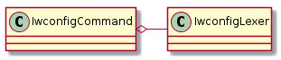
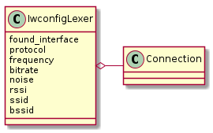

A module to extract information from iwconfig.
In order to make the classes smaller and create a class that can parse Iwconfig output without bundling it with a connection to get the output I broke out the regular expressions out into a class IwconfigLexer. Currently there is an awkward tie-in between the IwconfigCommand and the lexer wherein the command is calling the IwconfigLexer.search method and passing in the lines, name and regular expression. This was done to avoid having a method for every expression but now the user of the lexer has to bundle together both its search method and one of its expressions as well as the name used in creating the regular expression. This seems like it requires too much knowledge about the internal workings of the Lexer, but the only alteranative I could come up with was creating extra methods. This should be unbundled later.
IwconfigCommand(connection[, interface, ...]) |
a class to bundle the connection and the iperf lexer |
IwconfigEnums |

IwconfigLexer([interface, not_available]) |
A class to extract iwconfig information |
IwconfigLexer([interface, not_available]) |
A class to extract iwconfig information |
IwconfigEnums |

TestIwconfig.test_constructor() |
Does the constructor take the expected arguments? |
TestIwconfig.test_bitrate() |
Does the iwconfig make the correct call to the connection? |
TestIwconfig.test_ssid() |
Dose it get the sample SSID? |
TestIwconfig.test_rssi() |
Does it get the correct RSSI? |
TestIwconfig.test_noise() |
Does it get the correct noise? |
TestIwconfig.test_bssid() |
Does it get the right MAC Address? |
TestIwconfig.test_frequency() |
Does it get the right frequency? |
TestIwconfig.test_protocol() |
Does it get the protocol? |
TestIwconfig.test_interface() |
Does it match the interface string? |